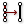

 Simplify Curve
Component Index > Curve > Curve > Util > Simplify
Simplify a curve.
Inputs
| Name | ID | Description | Type |
|---|---|---|---|
| Curve | C | Curve to simplify | Curve |
| Tolerance | t | Optional deviation tolerance (if omitted, the current document tolerance is used) | Number |
| Angle Tolerance | a | Optional angle tolerance (if omitted, the current document tolerance is used) | Number |
Outputs
| Name | ID | Description | Type |
|---|---|---|---|
| Curve | C | Simplified curve | Curve |
| Simplified | S | True if curve was modified in any way | Boolean |
Copyright © 2016 Robert McNeel & Associates.